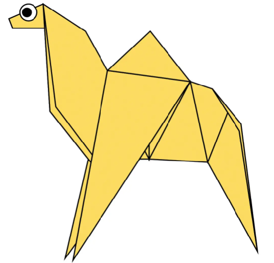

ORIGAMI DESIGNS
LEARNING ORIGAMI
FOLLOW US
CAMEL

INTERESTING FACTS ABOUT CAMEL -
1. CAMEL'S EAR ARE VERY FURRY.
2. CAMELS CAN MOVE EASILY ON SAND BECAUSE THEY HAVE SPECIALLY DESIGNED FEETS.
TEDDY BEAR

INTERESTING FACTS ABOUT TEDDY BEAR -
1. Teddy bears got their name from the story that Teddy Roosevelt refused to shoot a bear cub while on a hunting trip in 1902.
2. The world's smallest stitched teddy bear is a mere 0.29 inches tall! It was created by South African artist Cheryl Moss who is known for her minuscule work.